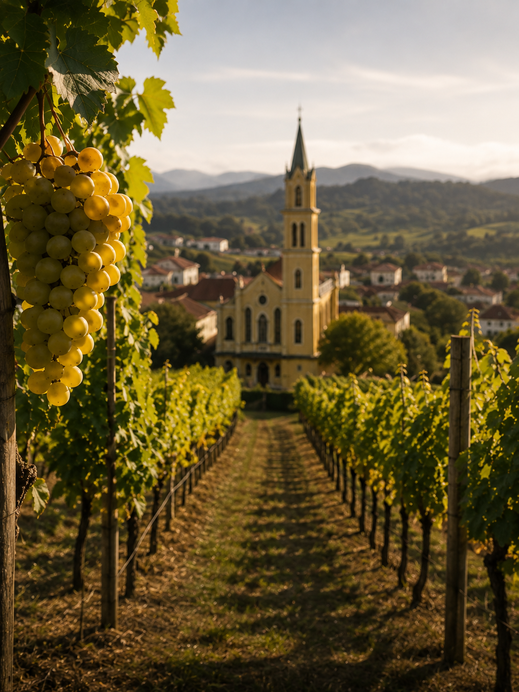

Terroirs do Brasil · Serra Gaúcha
Vale dos
Vinhedos
Um dos territórios mais emblemáticos do vinho brasileiro

Localizado na Serra Gaúcha, o Vale dos Vinhedos reúne encostas, diferentes altitudes e solos de origem vulcânica, formando uma paisagem diversa para a viticultura.
Sua história está profundamente ligada à imigração italiana e à agricultura familiar, que ajudaram a construir uma tradição vitivinícola transmitida por gerações.
O território recebeu o reconhecimento de Denominação de Origem, resultado de um longo trabalho de estudo, delimitação e caracterização de seus vinhos e de seu território.
A expressão do lugar
O que marca
esse terroir?
Relevo
Encostas e altitudes variadas, com diferentes condições de exposição solar e circulação de ar.
Clima
Temperado úmido, com influência importante da distribuição das chuvas ao longo do ciclo da videira.
Solo
Diversidade de solos formados sobre a matriz vulcânica da Formação Serra Geral.
Identidade
Merlot, Chardonnay e Pinot Noir ocupam papel de destaque dentro da Denominação de Origem.

Hoje, nossos projetos passam por diferentes terroirs brasileiros, incluindo Vale dos Vinhedos, Garibaldi, Campanha Gaúcha e Serra da Mantiqueira. Amanhã, novas regiões poderão fazer parte dessa história.
Porque “Terroirs do Brasil” não estabelece fronteiras. Estabelece um compromisso.
Se uma uva encontra sua melhor expressão em determinada região, queremos conhecê-la. Se encontramos um produtor ou um enólogo com um trabalho extraordinário, queremos conversar com ele. Se descobrimos um vinhedo capaz de entregar algo especial, queremos estar lá.
Não enxergamos o Brasil como um único terroir. Enxergamos um país inteiro de possibilidades.
Minha relação com o vinho foi construída entre a vivência familiar, o estudo e os anos de contato direto com produtores e consumidores. Acredito que cada vinho deve nascer de um encontro verdadeiro entre lugar, uva e pessoas. É essa busca que orienta os projetos da Arturo e que continuará conduzindo os próximos capítulos da nossa história.